Heute
Postfach prüfen, Fristen suchen, Antworten manuell verfassen, Wiedervorlagen im Kopf behalten. Wichtiges geht im Rauschen unter.
Mit Neural Nautic
Priorisierte Inbox, vorbereitete Entwürfe mit Bezug auf vorherige Threads und CRM-Kontext, Fristen automatisch erkannt, Wiedervorlagen geplant — und vor jeder Außenwirkung ein klarer Freigabeschritt.
Was steckt drin
Architektur
Anbindung an Microsoft 365 oder Google Workspace über offizielle APIs
(Graph / Gmail) · Klassifikation per LLM nach Dringlichkeit, Absendertyp
und Geschäftsrelevanz · Stilanpassung über Few-Shot-Prompting auf Basis
Ihrer historischen Antworten · alle Modellaufrufe gehen über
LiteLLM-Gateway in DSGVO-konformer EU-Region.
Compliance
Inhalte verlassen niemals den europäischen Rechtsraum. Kein Training auf Ihren Daten. Vollständiges Audit-Log jeder Aktion. Konfigurierbare Stopp-Regeln für sensible Empfänger (Behörden, Anwälte, Betriebsrat).